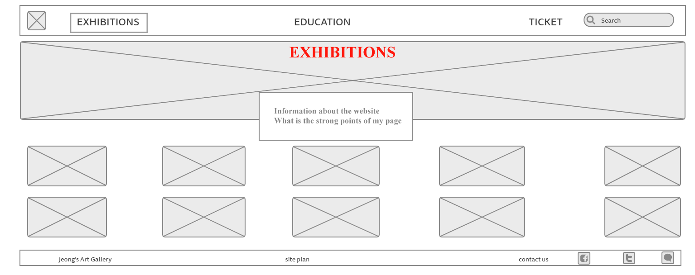
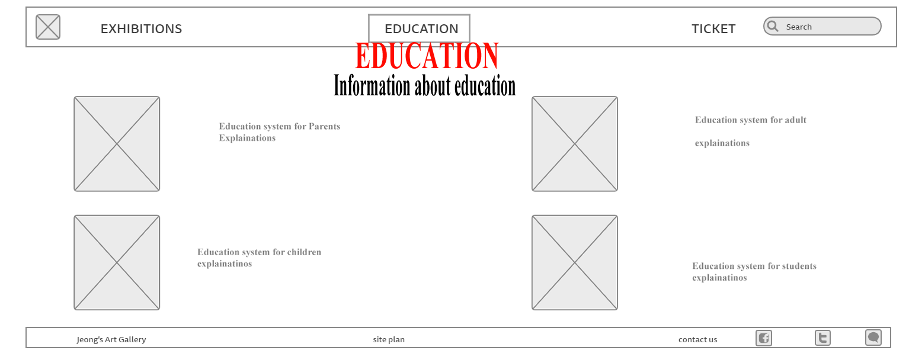
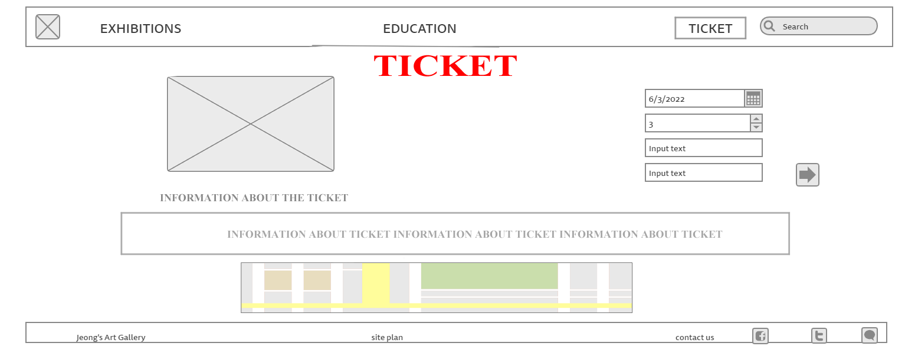

Overview
Purpose
Jeong’s Art Gallery is one of the best museums in the world. Jeong's Art Gallery runs an art museum education where you can discover the dynamics and experimentation of modern art and the value of art in everyday life. The educational program, with participants from various cultural backgrounds from infants to adults, aims to provide visitors with meaningful learning to experience modern art and communicate with society through art, and an open art museum for everyone. Jeong's Art Gallery can help visitors improve their understanding of art by doing real art activities, not just enjoying it with their eyes. It will also be an opportunity to realize the connection between art and society and to think about the role of art in the future society through the following activities. All activities will be provided free of charge to all visitors who purchase tickets to the museum. However, for smooth progress and preparation of materials, all activities can be made through reservation in advance. Even if you don't make a reservation, you can make a reservation on the same day, but if you run out of art materials and a large number of people participate, the on-site reservation may be restricted from participating in the activity. The art activities at Jeong's Art Gallery are divided into children, adolescents, adults, and seniors by age group. In addition, all training is conducted by professional instructors, so you have to pay a lot of money to take instructors' classes elsewhere. However, if you just pay a ticket here, you can get high-quality art education.
Audience
Our museum welcomes people of all ages. Unlike other art galleries, our art museum offers hands-on experience of art activities. Through him, we can improve our understanding of art and learn how art affects our lives. We have classes divided by age. Each class is divided into children, adolescents, adults, and seniors, and classes are conducted on what people of each age need the most. After taking classes, if you want to take more classes and take classes afterwards, you can take classes at a discounted price on the current admission ticket.
If You want to make wonderful memories with your family or friends? If you want to learn about modern art and how to draw? If you worry about your finances because a lot of people are trying to enjoy it together? If so, don’t worry, and just come to Jeong’s Art Gallery! Our museum has many exhibition rooms with various themes, so many people can enjoy it.And if you visit Jeong’s water rafting with more than 15 people, we will give 15% discounts on the total price.
Branding
Website Logo
Style Guide
Color Palette
Palette URL: https://coolors.co/f7fff6-4c5b5c-db6c79-15b097-3590f3| Primary | Secondary | Accent 1 | Accent 2 |
|---|---|---|---|
| [#3590F3] | [#15b097] | [#db6c79] |
Typography
Heading Font: Oswald
Paragraph Font: Hind Siliguri
Normal paragraph example
Jeong’s Art Gallery is one of the best museums in the world. Jeong's Art Gallery runs an art museum education where you can discover the dynamics and experimentation of modern art and the value of art in everyday life. The educational program, with participants from various cultural backgrounds from infants to adults, aims to provide visitors with meaningful learning to experience modern art and communicate with society through art, and an open art museum for everyone.
Colored paragraph example
Jeong’s Art Gallery is one of the best museums in the world. Jeong's Art Gallery runs an art museum education where you can discover the dynamics and experimentation of modern art and the value of art in everyday life. The educational program, with participants from various cultural backgrounds from infants to adults, aims to provide visitors with meaningful learning to experience modern art and communicate with society through art, and an open art museum for everyone.
Navigation
Site Map
Content
Home page
Images for the Home page

Exhibition
Images for the Education


Ticket
Images for the Ticket


Wireframes
Create three wireframes for your site. One for each page and list them here
Home
Jeong’s Art Gallery is one of the best museums in the world. Jeong's Art Gallery runs an art museum education where you can discover the dynamics and experimentation of modern art and the value of art in everyday life. The educational program, with participants from various cultural backgrounds from infants to adults, aims to provide visitors with meaningful learning to experience modern art and communicate with society through art, and an open art museum for everyone.
Educations
Jeong's Art Gallery runs an art museum education where you can discover the dynamics, experimentation, and value of art in your daily life. The educational program, with participants from various cultural backgrounds from infants to adults, aims to provide visitors with meaningful learning to experience modern art and communicate with society through art, and an open art museum for everyone.
Ticket
Operating hours: Monday, Tuesday, Thursday, Friday, Sunday: 10:00-18:00 Wednesday, Saturday Night Open: 10:00-21:00
